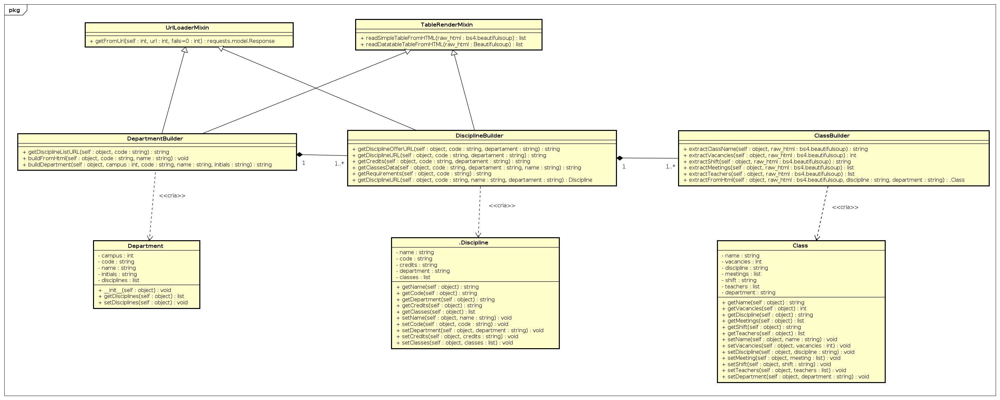

Padrões e GOFs
Histórico de revisão
| Data | Versão | Descrição | Autor(es) |
|---|---|---|---|
| 23/10/2019 | 0.1 | Adiciona introdução sobre o módulo Web Crawler | Lieverton Silva e Welison Regis |
| 23/10/2019 | 0.2 | Adiciona descrição e diagrama sobre template method usado | Lieverton Silva e Welison Regis |
| 23/10/2019 | 0.3 | Adiciona descrição sobre padrão builder utilizado | Lieverton Silva e Welison Regis |
| 24/10/2019 | 0.4 | Adiciona descrição e diagrama sobre padrão fachada utilizado | Lieverton Silva e Welison Regis |
| 24/10/2019 | 1.0 | Atualiza referências e gera primeira versão do documento | Lieverton Silva e Welison Regis |
| 13/11/2019 | 1.1 | Adiciona rastreabilidade aos códigos-fonte | Welison Regis |
Introdução
O Web Crawler do projeto é um módulo da aplicação A Monitoria responsável por capturar e disponibilizar as ofertas do campus da UnB-Gama disponíveis no site do Matrícula Web, UnB. Esse módulo é de suma importância para o projeto, pois, possibilitará apresentar a oferta e uma descrição das informações pertinentes aos interesses do usuário para a matrícula em monitoria. No repositório do Crawler de Ofertas aplicou-se alguns padrões de projeto pertinentes ao contexto, sendo eles empregados nos seguintes submódulos do Crawler:
- Builder: baseado na oferta do Matrícula Web, captura dados sobre disciplinas, turmas, professores e informações correlatas ao campus UnB-Gama.
- Transformers: trata a complexidade dos dados obtidos e manipula-os de maneira a modelar adequadamente os dados ao modelo de dados do banco postgreSQL.
- Savers: exporta os dados obtidos pelo Crawler para o formato json a fim de ser carregado no banco de dados.
- API: fornece uma interface para obtenção das ofertas do campus UnB-Gama.
Facade
Fachada é um padrão de design estrutural que fornece uma interface simplificada para uma biblioteca, uma estrutura ou qualquer outro conjunto complexo de classes.
Problema
Decorrente das inúmeras tarefas realizadas pelo Web Crawler e pela API, gera-se certa complexidade na interface da aplicação. Portanto, é necessário a delegação de tarefas de modo a simplificar a interface.
Solução Implementada
Estudou-se algumas soluções em relação a padrões para resolver o problema acima e, pode-se notar que o padrão fachada era o que apresentava uma solução de forma a não gerar demasiada quantidade de código ou estruturas complexas. Além disso, sua estrutura possibilitou simplificar o sistema em subsistemas, o que o tornou mais reutilizável e simples de se customizar.
Modelagem do Facade:

Portanto, implementou-se uma fachada que delega as responsabilidade para três módulos, conforme abaixo.
1 2 3 4 5 6 7 8 9 10 11 12 13 14 | from offer_crawler.builders.DepartmentBuilder import DepartmentBuilder from offer_crawler.savers.JsonBuilder import JsonBuilder from offer_crawler.savers.Saver import Saver class Facade: def __init__(self): self.department = DepartmentBuilder().buildDepartment() JsonBuilder(self.department) Saver() if __name__ == '__main__': Facade() |
Rastreabilidade
- Código do Padrão Facade Implementado
- Pasta com os Builders
- Pasta com os Transformers
- Pasta com os Savers
Builder
O Builder é um padrão de design criacional que permite construir objetos complexos passo a passo.
Problema
Devido a complexidade da criação do objeto é necessária a divisão do objeto em partes.
Solução Implementada
O código desenvolvido foi baseado na aplicação MWScanner, disponível abertamente no GitHub. Adaptou-se o código e desenvolveu-se as necessidades do nosso projeto tendo como base o projeto citado.
Modelagem do Builder: 
Abaixo, segue um exemplo de implementação do builder:
1 2 3 4 5 6 7 8 9 10 11 12 13 14 15 16 17 18 19 20 21 22 23 24 25 26 27 28 29 30 31 32 33 34 35 36 37 38 39 40 41 42 43 44 45 46 47 48 49 50 51 52 53 54 55 | from bs4 import BeautifulSoup from offer_crawler import BASE_URL from offer_crawler.Mixins import TableReaderMixin, UrlLoaderMixin from offer_crawler.Department import Department from offer_crawler.builders.DisciplinesBuilder import DisciplinesBuilder from multiprocessing.dummy import Pool as ThreadPool class DepartmentBuilder(TableReaderMixin, UrlLoaderMixin): def getDisciplineListURL(self, code): return BASE_URL + 'graduacao/oferta_dis.aspx?cod={}'.format(code) def buildFromHtml(self, code, name): response = self.getFromUrl(self.getDisciplineListURL(code)) if response.status_code != 200: return raw_html = BeautifulSoup(response.content, 'html.parser') table_data = self.readDatatableTableFromHTML(raw_html) disciplines = [] if table_data is not None: def createCourses(data): discipline = DisciplinesBuilder().buildDiscipline( data['Código'], data['Denominação'], code) disciplines.append( discipline ) return discipline pool = ThreadPool(16) c = pool.map(createCourses, table_data) pool.close() pool.join() print('[Department {}] Finished'.format(name)) return disciplines def buildDepartment(self, code=650, name= 'UNB - FACULDADE DO GAMA'): disciplines = self.buildFromHtml(code, name) department = Department() department.setDisciplines(disciplines) return department |
Rastreabilidade
- Código do builder de departamento
- Código do builder de disciplina
- Código do builder das turmas
- Pasta das classes auxiliares
Template Method
O Template Method é um padrão de design comportamental que define o esqueleto de um algoritmo na superclasse, mas permite que as subclasses substituam etapas específicas do algoritmo sem alterar sua estrutura. O Template Method foi fundamental no projeto no submódulo "Transformers", pois possibilitou que os dados capturados pelo Crawler sejam tratados de maneira padronizada de forma a facilitar o armazenamento das ofertas (json) em um formato compreensível pelo banco de dados.
Problema
Conforme exposto abaixo em um exemplo de uma disciplina, percebe-se que o json segue uma estrutura em que se deve definir a "model", a chave primária da tupla e seus respectivos campos que são personalizados:
1 2 3 4 5 6 7 8 9 10 11 12 | [ { "model": "offers.discipline", "pk": 1, "fields": { "name": "DINÂMICA DOS FLUÍDOS", "code": "203866", "department": 650, "credits": "004-001-000-006" } }, ] |
Solução Implementada
Decidiu-se por utilizar o template method visto que a exportação das ofertas deveria seguir um "roteiro" para salvar os dados em json compatível com o banco de dados.
Modelagem do template method:

Transformer Abstrata
Inicialmente, define-se uma classe abstrata que será responsável por definir os processos de conversão dos objetos em json:
1 2 3 4 5 6 7 8 9 10 11 12 13 14 15 16 17 18 19 20 | from abc import ABC, abstractmethod class JsonTransformer(ABC): def template_offer(self, obj) -> None: self.define_model() self.define_pk() self.define_fields(obj) @abstractmethod def define_model(self) -> None: pass @abstractmethod def define_pk(self) -> None: pass @abstractmethod def define_fields(self, obj) -> None: pass |
Rastreabilidade
Transformer Concreta
Definida a classe abstrata, utilizou-se as seguintes classes concretas para transformar os dados em json: DisciplineTransformer, DisciplineClassTransformer, MeetingTransformer e ProfessorTransformer.
Abaixo, segue um exemplo de transforme concreta implementada:
1 2 3 4 5 6 7 8 9 10 11 12 13 14 15 16 17 18 19 20 21 22 23 24 25 26 27 28 29 30 | import collections import json from offer_crawler.transformers.transformer import JsonTransformer class DisciplineClassTransformer(JsonTransformer): pk = 1 disciplines_class = [] def __init__(self, discipline_class, fk, teachers): self.map_discipline_class = collections.defaultdict(dict) self.fk = fk self.teachers = teachers self.discipline_class = discipline_class def define_model(self) -> None: self.map_discipline_class["model"] = "offers.disciplineclass" def define_pk(self) -> None: self.map_discipline_class["pk"] = DisciplineClassTransformer.pk DisciplineClassTransformer.pk += 1 def define_fields(self, discipline_class) -> None: self.map_discipline_class["fields"]["name"] = self.discipline_class.getName() self.map_discipline_class["fields"]["vacancies"] = self.discipline_class.getVacancies() self.map_discipline_class["fields"]["shift"] = self.discipline_class.getShift() self.map_discipline_class["fields"]["discipline"] = self.fk self.map_discipline_class["fields"]["teachers"] = self.teachers DisciplineClassTransformer.disciplines_class.append(self.map_discipline_class) |
Rastreabilidade
- Código da Classe Concentra de Disciplinas
- Código da Classe Concentra de Turma
- Código da Classe Concentra de Encontros
- Código da Classe Concentra de Professor
Referências
-
SERRANO, Milene. Desenho - Aulas 16, 17, 18 e 19. 2º/2019. Material apresentado para a disciplina de Desenho e Arquitetura de Software no curso de Engenharia de Software da UnB, FGA. ↩
-
REFACTORING, GURU. Behavioral Design Patterns: Behavioral design patterns are concerned with algorithms and the assignment of responsibilities between objects. Russia. 2019. Disponível: https://refactoring.guru/design-patterns/behavioral-patterns. Acesso em: 20 out. 2019. ↩